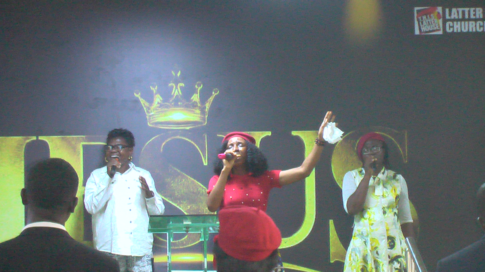
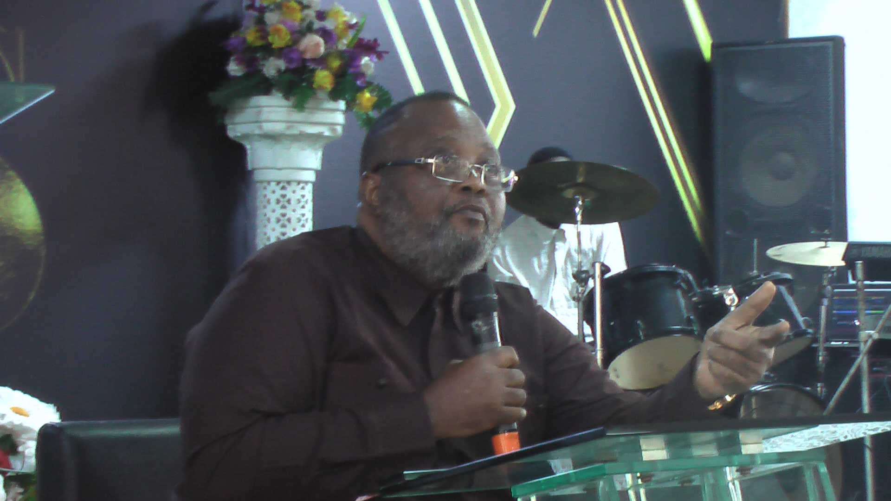

Our Faith
We believe in Jesus Christ, the truth of Scripture and the transforming power of God's Word.
Discover the heart, faith, vision and purpose of T.H.I.S Latter House Church of Christ.
T.H.I.S Latter House Church of Christ is a Christian community committed to biblical teaching, prayer, worship, fellowship and sharing the love of Jesus Christ.
We desire to see people grow in faith, build a closer relationship with God and live out the truth of His Word in their daily lives.
Whether you are new to church, seeking a deeper relationship with God or looking for a place to belong, we warmly welcome you.
Plan Your Visit
Our faith, values and purpose shape everything we do as a church family.
We believe in Jesus Christ, the truth of Scripture and the transforming power of God's Word.
We value love, prayer, worship, service, fellowship and genuine care for one another.
To help people know Christ, grow in faith and serve God faithfully in their daily lives.
Leadership rooted in faith, service and commitment to God's Word.

Founder, T.H.I.S Latter House Church of Christ
Pastor Oluseyi Bamgbose is the visionary founder and lead spiritual shepherd of T.H.I.S Latter House Church of Christ. With a deep passion for revival, spiritual growth and community transformation, he is dedicated to preaching the Word of God and nurturing believers to fulfil their God-given purpose.
Driven by a calling to see lives transformed through the power and glory of God, Pastor Oluseyi Bamgbose stepped out in faith to establish T.H.I.S Latter House. Under his leadership, the ministry seeks to build a vibrant and loving spiritual family through sincere worship, biblical teaching, prayer and service to others.
His desire is to see people develop a deeper relationship with God, grow spiritually and become committed followers of Jesus Christ.
Connect With UsCome worship with us, experience God's love and grow together in faith.
Get in Touch